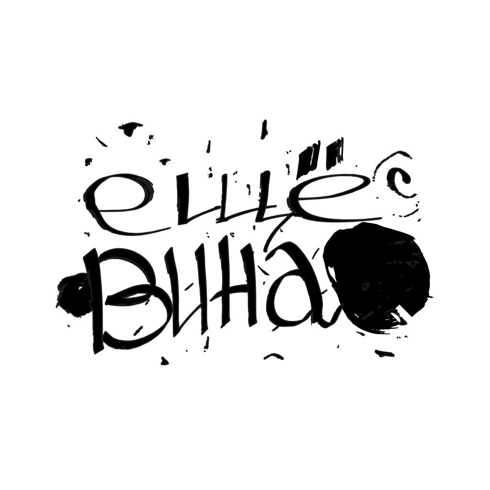
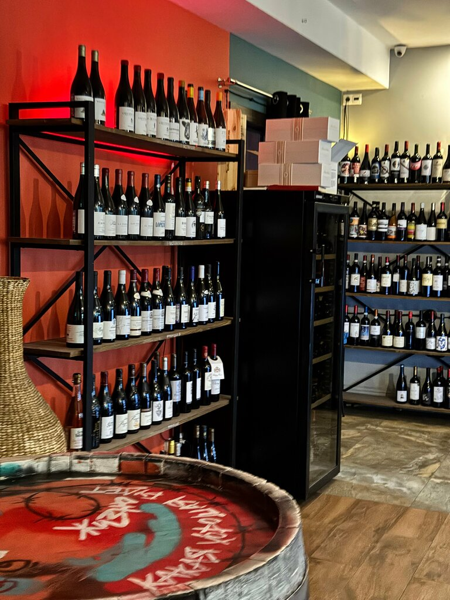
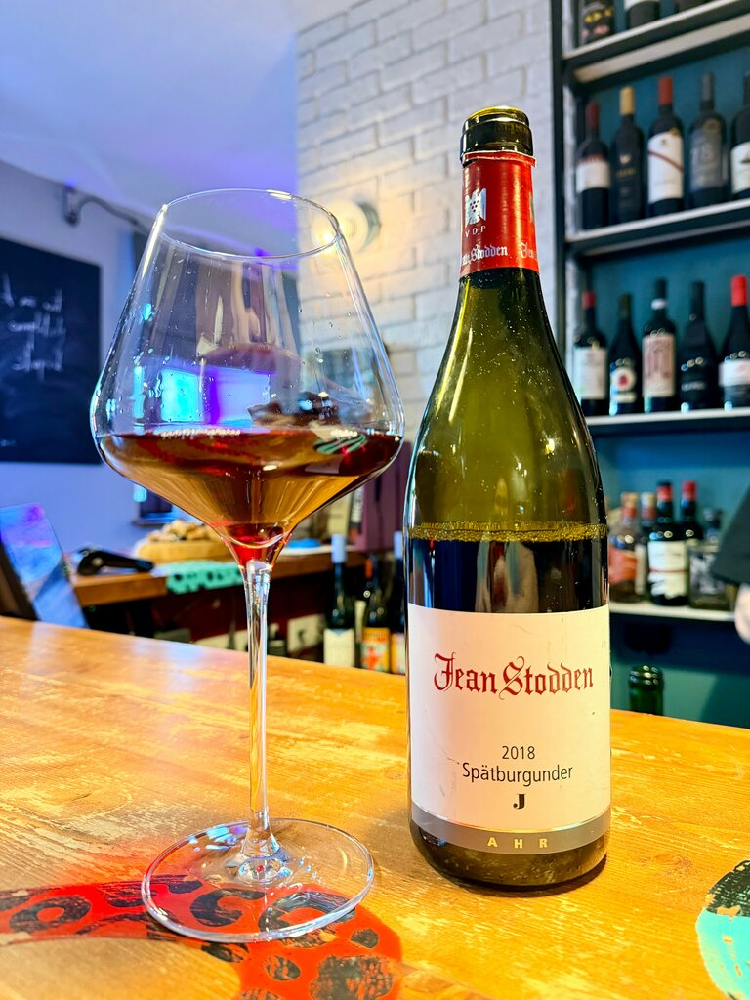
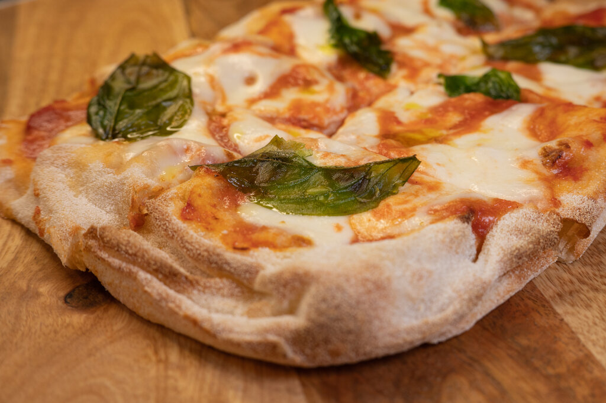
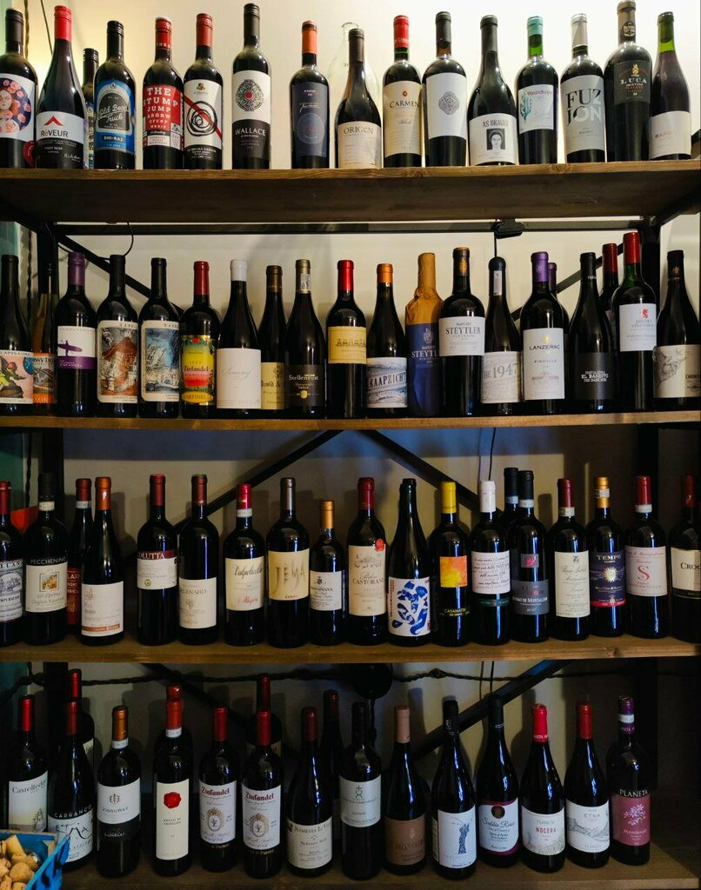
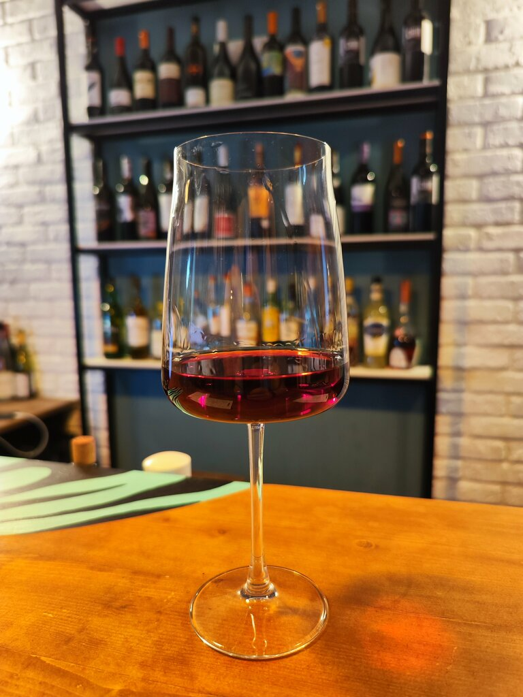
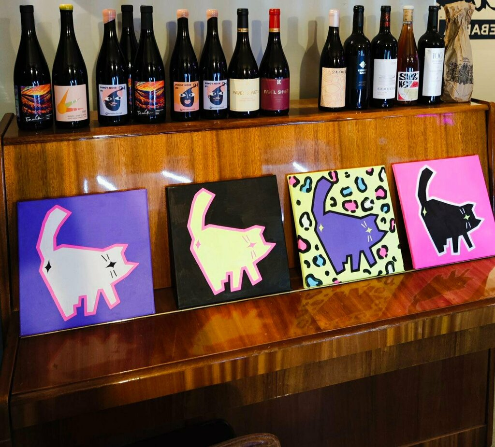
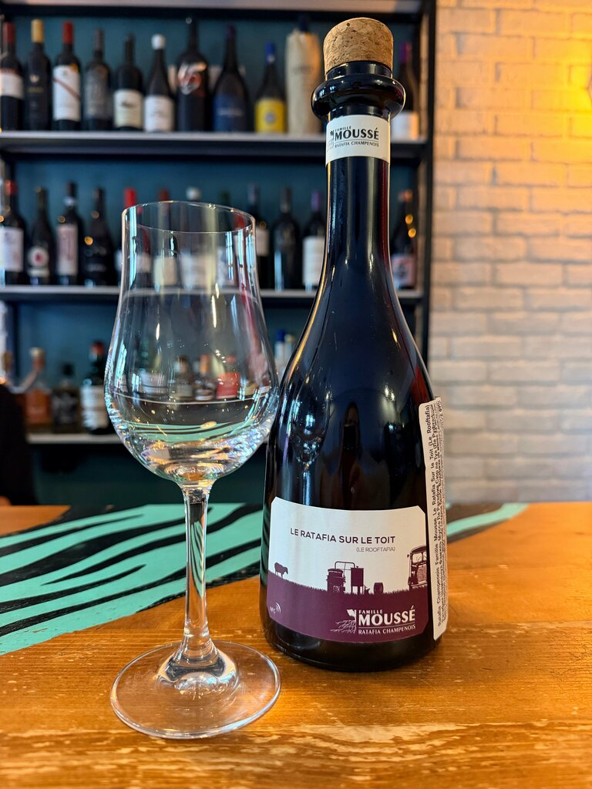
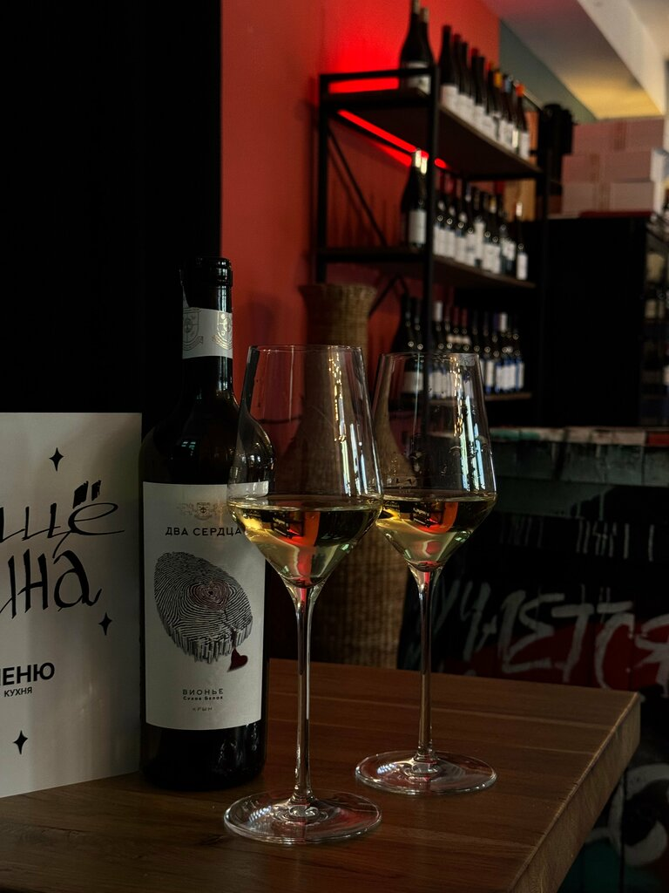

ЗабронироватьЛамповый винный бар в двух минутах от Кропоткинской. Вино бокалами и бутылками, дегустации, римская пицца и бранч.
Забронировать столик Смотреть кухню



Винная карта здесь живая: от бюджетных бутылок до серьёзных, есть и российские вина. Гости хвалят радушного сомелье и дегустации. В зале 7–9 столов, поэтому в вечер пятницы лучше бронировать заранее.
Красные стены, стеллажи с бутылками и коты на полке.




Отзывы с Яндекс Карт.
Очень ламповый бар в центре Москвы, 2 минуты от Кропоткинской. Динамичная винная карта: никогда не знаешь, что сегодня на бокале. Есть всё, от бюджетного до серьёзных бутылок.
Был на дегустации, очень понравилось! Сомелье и совладелец бара — очень радушный человек, искренне влюблённый в вино.
Скажем, что сегодня на бокале, и подберём место.